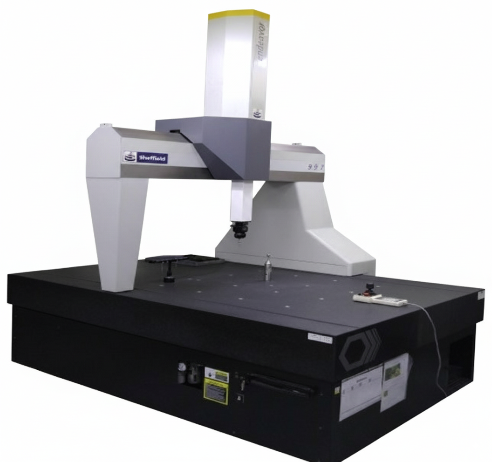
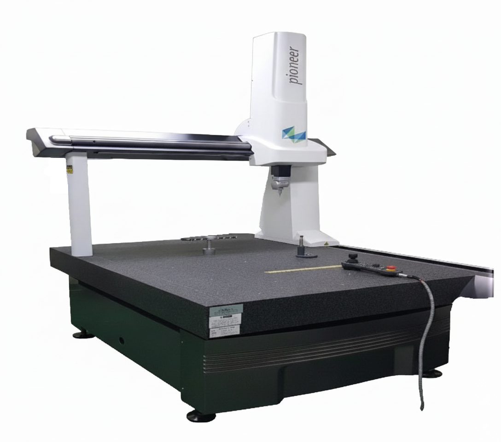

에스엠테크는 독일·일본제 고정밀 좌표 측정기를 운용하며, ± 0.002 mm급 반복 정밀도로 측정합니다. 모든 부품은 3D 스캐닝 데이터와 함께 측정 리포트가 발행됩니다.
복잡 형상의 치수·윤곽·위치도 측정. 고정밀 Probing.
박형·미세 형상 부품의 2D 치수 측정 및 윤곽 검사.
고정밀 높이·스텝 차수 측정용 디지털 하이트 게이지.
도면 기반 주요 치수 선정 및 측정 프로그램 작성.
CMM·투영기로 모든 부품 전수 검사. 샘플링 없음.
PDF / Excel 측정 리포트, FAI(최초품 검사) 지원.
에스엠테크가 보유한 정밀 계측 장비 현황 (단위: EA)
| 계측기명 | C.M.M | C.M | T.I.D | M.H | P.P.J | G.S.P | G.B | S.R.T | I.S.M | D.H.G |
|---|---|---|---|---|---|---|---|---|---|---|
| 보유수 (EA) | 2 | 1 | 1 | 1 | 1 | 1 | 1 | 1 | 1 | 2 |
| 계측기명 | C.G | I.S.M | R.D.G | P.I.G | O.S.M | D.V.C | T.P.G | T.R.G | T.R.G | 기타 |
|---|---|---|---|---|---|---|---|---|---|---|
| 보유수 (EA) | 2 | 3 | 3 | 6 | 10 | 14 | 16 | 20 | 21 | 21 |